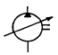
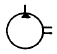
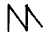
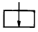

모터그레이더운전기능사 (2003-01-26 기출문제)
1과목: 임의 구분
1. 고속 디젤기관이 가솔린 기관보다 좋은 점은?
- 운전 중 소음이 비교적 적다.
- 엔진의 압축비가 낮다.
- 엔진의 출력당 무게가 가볍다.
- 열효율이 높고 연료 소비율이 적다.
(정답률: 알수없음)

2. 디젤기관의 장점이 아닌 것은?
- 가속성이 좋고 운전이 정숙하다.
- 열효율이 높다.
- 화재의 위험이 적다.
- 연료소비율이 낮다.
(정답률: 알수없음)
3. 디젤기관에서 압축압력이 저하되는 가장 큰 원인은?
- 피스톤링의 마모
- 기어오일의 열화
- 엔진오일 과다
- 냉각수 부족
(정답률: 알수없음)
4. 디젤엔진의 진동원인이 아닌 것은?
- 불균율이 있을 때
- 분사압력이 실린더별로 차이가 있을 때
- 4기통 엔진에서 한개의 분사노즐이 막혔을 때
- 하이텐션 코드가 불량할 때
(정답률: 알수없음)
5. 4행정 기관에서 엔진이 4000rpm일 때 분사펌프의 회전수는?
- 2000rpm
- 8000rpm
- 4000rpm
- 1000rpm
(정답률: 알수없음)
6. 디젤기관에서 주행중 시동이 꺼지는 현상과 가장 거리가 먼 것은?
- 연료필터가 막혔을 때
- 연료탱크내에 물이 들어 있을 때
- 프라이밍 펌프가 불량할 때
- 연료연결 파이프에 누설이 있을 때
(정답률: 알수없음)
7. 기관이 과열되는 원인이 아닌 것은?
- 온도조절기가 열린 채로 고장이 났다.
- 냉각수의 양이 적다.
- 물재킷에 스케일이 많이 쌓였다.
- 물펌프의 작용이 불완전하다.
(정답률: 알수없음)
8. 기관 냉각수의 수온을 측정하는 곳으로 다음 중 가장 적당한 곳은?
- 수온조절기 내부
- 실린더헤드 물재킷부
- 라디에이터 하부
- 라디에이터 상부
(정답률: 알수없음)
9. 다음 엔진오일중 오일 점도가 가장 낮은 것은?
- SAE #40
- SAE #10
- SAE #20
- SAE #30
(정답률: 알수없음)
10. 엔진의 윤활유 소비량이 과다해지는 가장 큰 원인은?
- 오일 여과기 불량
- 냉각펌프 손상
- 기관의 과열
- 피스톤링 마멸
(정답률: 알수없음)
11. 과급기(Turbo charger)에 대한 설명 중 옳은 것은?
- 피스톤의 흡입력에 의해 임펠러가 회전한다.
- 연료 분사량을 증대시킨다.
- 가솔린 기관에만 설치된다.
- 실린더내의 흡입 공기량을 증가시킨다.
(정답률: 알수없음)
12. 건설기계에 많이 사용되는 전동기는?
- 교류 전동기
- 직류직권 전동기
- 직류복권 전동기
- 직류분권 전동기
(정답률: 알수없음)
13. 건설기계의 디젤기관 시동시 사용되는 기동모터에서 자력선을 잘 통과 시키고 동시에 맴돌이 전류를 감소시키는 작용을 하는 것은?
- 전기자 철심
- 계자철심
- 계자코일
- 전기자 코일
(정답률: 알수없음)
14. 기관을 회전하여도 전류계가 움직이지 않는 원인으로 틀린 것은?
- 레귤레이터 고장
- 전류계 불량
- 축전지 불량
- 스테이터코일 단선
(정답률: 알수없음)
15. 건설기계 차량에서 가장 큰 전류가 흐르는 것은?
- 시동모터
- 로터
- 배전기
- 콘덴서
(정답률: 알수없음)
16. 축전지의 양극단자는?
- 음극보다 약간 굵다.
- Neg라 표시되어 있다.
- 짙은 회색이다.
- 음극보다 작다.
(정답률: 알수없음)
17. 축전지 커버를 닦아내려 할 때 사용하는 중화제로 가장 좋은 것은?
- 증류수
- 베이킹 소다수
- 비눗물
- 암모니아수
(정답률: 알수없음)
18. 굴삭기에서 트랙장력을 조정하는 기능을 가진 것은?
- 아이들러
- 트랙 어저스터
- 주행모터
- 스프로켓
(정답률: 알수없음)
19. 굴삭기 붐의 자연 하강량이 많다. 원인이 아닌 것은?
- 유압실린더 배관이 파손되었다.
- 콘트롤 밸브의 스풀에서 누출이 많다.
- 유압실린더의 내부누출이 있다.
- 유압작동 압력이 과도하게 낮다.
(정답률: 알수없음)
20. 지게차의 일상점검 사항이 아닌 것은?
- 토크 컨버터의 오일 점검
- 타이어 손상 및 공기압 점검
- 작동유의 양
- 틸트 실린더 오일누유 상태
(정답률: 알수없음)
2과목: 임의 구분
21. 지게차의 하중을 지지해 주는 것은?
- 마스터 실린더
- 구동 차축
- 차동 장치
- 최종 구동장치
(정답률: 알수없음)
22. 기중기의 사용 용도와 가장 거리가 먼 것은?
- 철도 교량 설치작업
- 경지정리 작업
- 파일 항타 작업
- 차량의 화물적재 및 적하작업
(정답률: 알수없음)
23. 타이어식 로우더가 무한 궤도식 로우더에 비해 좋은 점은?
- 견인력
- 습지에서의 작업성
- 기동성
- 좁은 공간에서의 선회성
(정답률: 알수없음)
24. 토크컨버터가 구조상 유체클러치와 다른 점은?
- 터빈(Turbine)
- 스테이터(Stator)
- 펌프(Pump)
- 임펠러(Impellar)
(정답률: 알수없음)
25. 브레이크 파이프 내에 베이퍼록이 발생하는 원인과 가장 거리가 먼 것은?
- 지나친 브레이크 조작
- 드럼의 과열
- 잔압의 저하
- 라이닝과 드럼의 간극 과대
(정답률: 알수없음)
26. 겨울철 연료탱크 내에 연료를 가득 채워두는 이유는?
- 공기 중의 수증기가 응축되어 물이 생기므로
- 연료가 적으면 휘발하여 손실되므로
- 연료 게이지가 고장날 수 있으므로
- 연료가 적으면 출렁거리므로
(정답률: 알수없음)
27. 건설기계 등록말소 사유 중 반드시 시·도지사가 직권으로 등록 말소하여야 하는 것은?
- 사위(詐僞) 기타 부정한 방법으로 등록을 한 때
- 검사최고를 받고도 정기검사를 받지 아니한 때
- 건설기계의 용도를 폐지한 때
- 건설기계를 수출하는 때
(정답률: 알수없음)
28. 정기검사를 받을 수 없는 사유가 발생한 경우 연기신청은언제까지 하여야 하는가?
- 검사유효기간 만료일까지
- 검사신청기간 만료일로부터 10 일이내
- 검사신청기간 만료일까지
- 검사유효기간 만료일 10 일전까지
(정답률: 알수없음)
29. 정차 방법으로 옳은 것은?
- 차체의 전단부를 도로 중앙을 향하도록 비스듬히 정차한다.
- 진행방향의 반대방향으로 정차한다.
- 일방 통행로에서 좌측단에 정차한다.
- 진행방향과 평행하게 도로의 우측단에 정차한다.
(정답률: 알수없음)
30. 정지선이나 횡단보도 및 교차로 직전에서 정지하여야 할 신호는?
- 녹색 및 적색등화
- 적색 및 황색등화의 점멸
- 녹색 및 황색등화
- 황색 및 적색등화
(정답률: 알수없음)
31. 차마가 도로이외의 장소에 출입하기 위하여 보도를 횡단하려고 할 때 가장 적절한 통행방법은?
- 보행자가 없으면 서행한다.
- 보도 직전에서 일시 정지하여 보행자의 통행을 방해하지 말아야 한다.
- 보행자 유무에 구애받지 않는다.
- 보행자가 있어도 차마가 우선 출입한다.
(정답률: 알수없음)
32. 술에 취한 상태로 타이어식 건설기계를 자동차 전용도로에서 운전하였을 경우 벌금은?
- 200만원 이하의 벌금
- 100만원 이하의 벌금
- 300만원 이하의 벌금
- 500만원 이하의 벌금
(정답률: 알수없음)
33. 교차로 통행방법에 대한 설명 중 옳은 것은?
- 교차로 중심 바깥쪽으로 좌회전 한다.
- 우회전 차는 차로에 관계없이 우회전 할 수 있다.
- 좌.우 회전시는 경음기를 사용하여 주위에 주의 신호를 한다.
- 좌회전 차는 미리 중앙선을 따라 서행으로 진행한다.
(정답률: 알수없음)
34. 제작자로부터 건설기계를 구입한 자가 무상으로 사후관리를 받을 수 있는 법정기간은?
- 24월
- 6월
- 18월
- 12월
(정답률: 알수없음)
35. 유압기계의 장점이 아닌 것은?
- 에너지 축적이 가능하다.
- 힘의 전달 및 증폭이 용이하다.
- 속도제어가 용이하다.
- 유압장치의 점검이 용이하다.
(정답률: 알수없음)
36. 오일의 압력이 낮아지는 원인이 아닌 것은?
- 오일의 점도가 낮아졌을 때
- 오일의 점도가 높아졌을 때
- 계통내에서 누설이 있을 때
- 오일펌프의 마모
(정답률: 알수없음)
37. 펌프에서 오일은 토출되나 압력이 상승하지 않는 원인이 아닌 것은?
- 유압 회로 중 밸브나 작동체의 누유가 발생할 때
- 엔진으로부터 구동력을 전달 받는 커플링이 파손되었을 때
- 릴리프 밸브(Relief valve)의 설정압이 낮거나 작동이 불량할 때
- 펌프 내부 이상으로 누유가 발생할 때
(정답률: 알수없음)
38. 작동유의 열화를 판정하는 방법으로 적절하지 않는 것은?
- 오일을 가열후 냉각되는 시간확인
- 점도 상태로 확인
- 색깔이나 침전물의 유무 확인
- 냄새로 확인
(정답률: 알수없음)
39. 기어식 유압펌프에서 소음이 나는 원인이 아닌 것은?
- 오일의 과부족
- 펌프의 베어링 마모
- 흡입 라인의 막힘
- 오일량의 과다
(정답률: 알수없음)
40. 차동 회로를 설치한 유압기기에서 속도가 나지 않는 이유는?
- 회로내에 압력손실이 있을 때
- 회로내에 감압밸브가 작동하지 않을 때
- 회로내에 관로의 지름차가 있을 때
- 회로내에 바이패스 통로가 있을 때
(정답률: 알수없음)
3과목: 임의 구분
41. 유압유의 구비조건이 아닌 것은?
- 적정한 유동성과 점성을 갖고 있을 것
- 실(seal) 재료와의 적합성이 좋을 것
- 필요한 압축성을 갖고 있을 것
- 물리·화학적으로 안정되고 장기사용에 견딜 것
(정답률: 알수없음)
42. 내경이 작은 파이프에서 미세한 유량을 조정하는 밸브는?
- 바이패스 밸브
- 스로틀 밸브
- 니들 밸브
- 압력보상 밸브
(정답률: 알수없음)
43. 유압장치의 구성요소가 아닌 것은?
- 오일탱크
- 펌프
- 제어밸브
- 차동장치
(정답률: 알수없음)
44. 가변용량형 유압펌프의 기호 표시는?




(정답률: 알수없음)
45. 유압장치 내의 압력을 일정하게 유지하고, 최고 압력을 제한하며 회로를 보호해주는 밸브는?
- 로터리 밸브
- 첵 밸브
- 릴리프 밸브
- 제어 밸브
(정답률: 알수없음)
46. 유압실린더의 숨돌리기 현상이 생겼을 때 일어나는 현상이 아닌 것은?
- 피스톤 작동이 불안정하게 된다.
- 시간의 지연이 생긴다.
- 기름의 공급이 과대해진다.
- 서지압이 발생한다.
(정답률: 알수없음)
47. 다음 배출물 가스 중에서 인체에 가장 해가 없는 가스는?
- HC
- CO
- CO2
- NOx
(정답률: 알수없음)
48. 해머는 어느 것을 사용해야 안전한가?
- 타격면이 평탄한 것
- 타격면에 홈이 있는 것
- 머리가 깨어진 것
- 쐐기가 없는 것
(정답률: 알수없음)
49. 공장에서 엔진을 이동시킬려고 한다. 가장 좋은 방법은?
- 로프로 묶고 살며시 잡아당긴다.
- 지렛대를 이용하여 움직인다.
- 여러 사람이 들고 조용히 움직인다.
- 체인 블록이나 호이스트를 사용한다.
(정답률: 알수없음)
50. 연료 주입시 주의 사항으로 가장 거리가 먼 것은?
- 연료탱크의 3/4까지 주입한다.
- 화기를 가까이 하지 않는다.
- 불순물이 있는 것을 주입하지 않는다.
- 탱크의 여과망을 통해 주입한다.
(정답률: 알수없음)
51. 다음 작업 중 장갑을 착용하고 해도 되는 작업은?
- 무거운 물건을 들어 낼 때
- 연삭 작업을 할 때
- 해머 작업을 할 때
- 정밀기계 작업을 할 때
(정답률: 알수없음)
52. 안전보호구 선택시 유의사항으로 틀린 것은?
- 보호구 검정에 합격하고 보호성능이 보장될 것
- 착용이 용이하고 크기 등 사용자에게 편리할 것
- 작업 행동에 방해되지 않을 것
- 반드시 강철으로 제작되어 안전 보장형일 것
(정답률: 알수없음)
53. 다음 그림의 안전표지판이 나타내는 것은?
- 안전제일
- 출입금지
- 인화성물질 경고
- 보안경 착용
(정답률: 알수없음)
54. 건설산업 현장에서 재해가 자주 발생하는 주요한 원인에 해당되지 않는 것은?
- 고용의 불안정
- 작업 자체의 위험성
- 안전기술 부족
- 공사 계약의 용이성
(정답률: 알수없음)
55. 작업개시전 운전자의 조치사항으로 가장 거리가 먼 것은?
- 장비의 이상 유무를 작업전에 항상 점검하여야 한다.
- 주행로 상에 복수의 장비가 있을때는 충돌방지를 위하여 주행로 양측에 콘크리트 옹벽을 친다.
- 운전하는 장비의 사양을 숙지 및 고장나기 쉬운곳을 파악하여야 한다.
- 점검에 필요한 점검내용을 숙지한다.
(정답률: 알수없음)
56. 오픈엔드렌치 사용 중 사용법이 틀린 것은?
- 볼트는 미끌리지 않도록 단단히 끼워 민다.
- 입(jaw)이 변형된 것은 사용하지 않는다.
- 자루에 파이프를 끼워 사용하지 않는다.
- 조정 렌치는 아랫턱 방향으로 돌려서 사용 한다.
(정답률: 알수없음)
57. 도시가스 배관 주위에서 굴착장비 등으로 작업할 때 준수사항으로 적합한 것은?
- 가스배관 좌우 1m이내 에서는 장비작업을 금하고 인력으로 작업해야 한다.
- 가스배관 주위 50㎝ 까지는 사람이 직접 확인할 경우 굴삭기 등으로 작업할 수 있다.
- 가스배관 주위 30㎝ 까지는 장비로 작업이 가능하다.
- 가스배관 2m이내에서는 어떤 장비의 작업도 금한다.
(정답률: 알수없음)
58. 도시가스가 공급되는 지역에서 지하차도 굴삭공사를 하고자 하는자는 어떤 서류를 작성하여 시· 도지사에게 제출하여야 한다. 이 때 작성하는 서류의 명칭은?
- 안전관리규정
- 공급규정
- 가스안전영향평가서
- 기술검토서
(정답률: 알수없음)
59. 154kV 송전철탑 근접 굴착작업시 옳은 것은?
- 철탑이 일부 파손되어도 재질이 철이므로 안전에는 전혀 영향이 없다.
- 전력선에 접촉만 되지 않도록 하여 조심하여 작업한다.
- 철탑부지에서 떨어진 위치에서 접지선이 노출되어 단선되었을 경우라도 시설관리자에게 연락을 취한다.
- 철탑의 지표상 노출부와 지하매설부 위치는 다른 것을 감안하여 임의로 판단하여 작업한다.
(정답률: 알수없음)
60. 전기 기기의 손상방지 대책에 관한 사항으로 옳은 것은?
- 휴즈 단선시는 철선으로 연결하여 임시 사용한다.
- 휴즈 단선시는 전선으로 연결 후 계속 사용한다.
- 코드의 연결은 가급적 길게 한다.
- 휴즈 단선시는 정격 휴즈로 교체 후 사용한다.
(정답률: 알수없음)